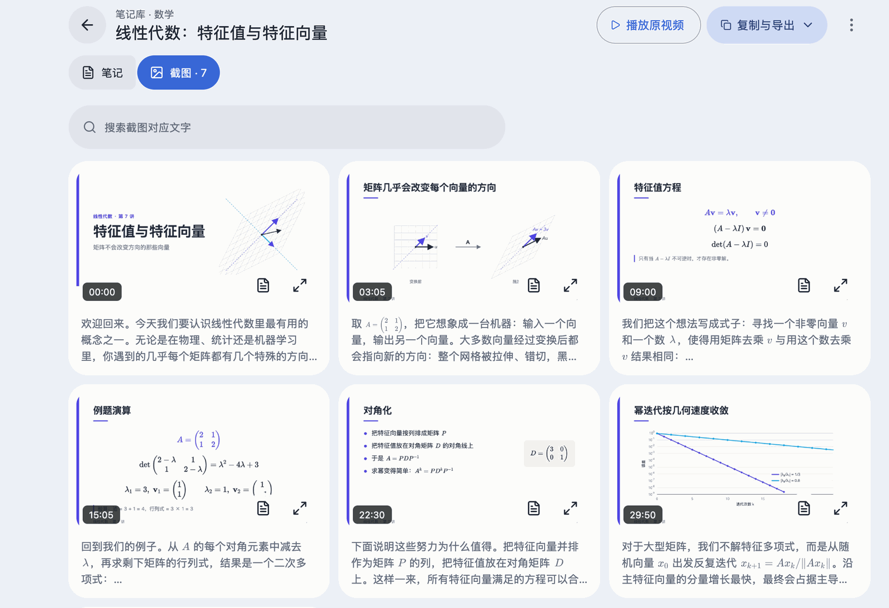
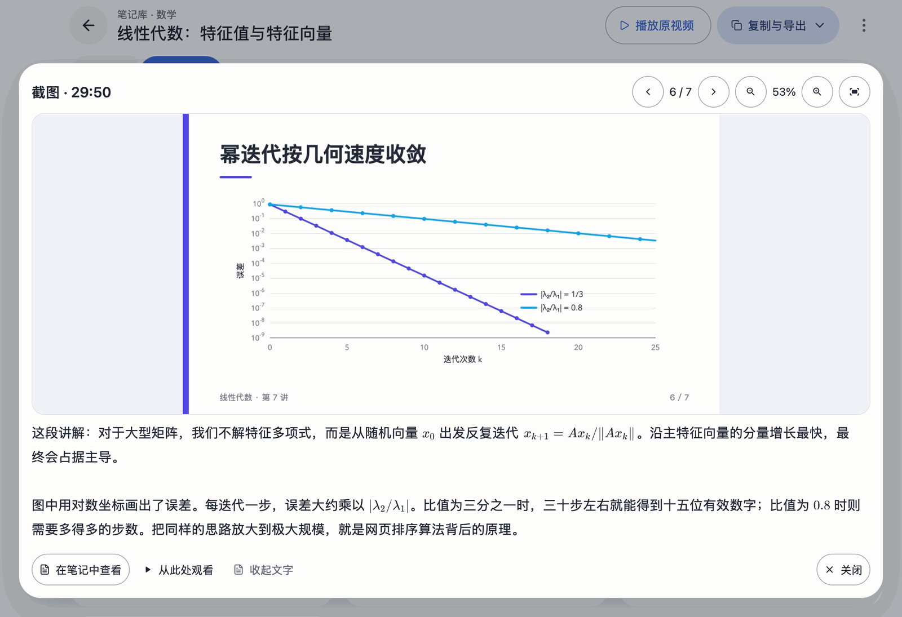

笔记跟着课件走
每页幻灯片一张截图，对应的讲解按段落排在下方，保存为普通的 course.md 和 course.html，在哪里都能打开。
粘贴 YouTube 或 Bilibili 链接，或拖入本地视频。course2md 在每次换页时截图，把讲解的话整理在截图下方，并保存在你电脑上的笔记库里。
Windows x64（ZIP） Linux x86_64（tar.gz） 全部下载
brew install --cask mizorewww/tap/course2md-gui
Homebrew 会一并安装 ffmpeg、yt-dlp 和 aria2。以 MIT 许可证免费开源。
为什么用 course2md
每页幻灯片一张截图，对应的讲解按段落排在下方，保存为普通的 course.md 和 course.html，在哪里都能打开。
语音识别在你的电脑上完成：Apple 芯片开箱即用，其他系统可用显卡、CPU 或 Intel Core Ultra 的 NPU。只有选择云端服务时音频才会上传。
视频自带字幕时直接使用，无需语音识别。
校对、摘要、八种语言的双语笔记，以及数学公式（包括口述的公式）写成 LaTeX 并排版显示。支持任意 OpenAI 兼容服务、本地 Ollama 或 ChatGPT 订阅，默认关闭。
可导出带图片的 HTML、带截图的 Markdown（.zip）和 JSON 数据。
English、简体中文、繁體中文和日本語，默认跟随系统，可在「设置 → 外观 → 界面语言」随时切换。
应用导览
在「主页」粘贴链接或拖入文件。course2md 会先读取视频信息，你可以确认标题、时长和处理选项后再开始转换。Bilibili 分集（多 P）和播放列表可以多选，一次加入队列。
阅读器以摘要和要点开头，旁边是章节目录，可在整篇笔记中查找文字。
「截图」视图一眼看完整节课。点开任意一页可放大、缩放和拖动，并阅读这页讲了什么。


笔记库支持嵌套文件夹、拖放整理和包含子文件夹的搜索，可以同时使用多个保存位置；删除的笔记移到废纸篓（Windows 和 Linux 为回收站）。
转换作为任务在后台运行，可以暂停、继续和调整顺序，退出应用后可以接着处理。每一步都显示进度，模型下载显示大小、速度和剩余时间。某一部分失败时，可以先阅读已完成的内容，只补做失败的部分。
在「设置 → 外观」选择 10 套主题之一，调整界面文字大小，或减少动态效果。界面提供 English、简体中文、繁體中文和日本語。
安装
桌面应用自带转换引擎，不需要另外安装命令行工具。处理视频需要 ffmpeg，下面的包管理器会一并安装。
使用 Homebrew 时，这条命令会安装应用以及 ffmpeg、yt-dlp 和 aria2，然后从「应用程序」打开 course2md。
brew install --cask mizorewww/tap/course2md-gui
不使用 Homebrew 时，下载 DMG，把 course2md 拖入「应用程序」，并按 macOS 指南安装 ffmpeg。应用已内置 yt-dlp。
yt-dlp 和 aria2。ffmpeg：
winget install --id Gyan.FFmpeg -e
course2md-desktop.exe，其他文件保持在同一目录。yay -S course2md-gui-bin
或 paru -S course2md-gui-bin。这会安装应用、视频工具和图形库；显卡需要可用的 Vulkan 驱动，详见 Linux 指南。
下载 tar.gz，按 Linux 指南安装 ffmpeg 和图形库，解压后运行 ./course2md-desktop。基于 Ubuntu 24.04 构建，已内置 yt-dlp。
已下载的模型、Bilibili 登录和 CLI 的 config.toml 继续可用。1.x 生成的笔记仍以 course.md / course.html 保存在原目录，但 2.0 的笔记库只列出 2.0 生成的笔记。识别方式和 AI 服务需要在首次引导中重新设置；需要在笔记库中阅读旧笔记时请重新转换。
使用 Homebrew 升级：
brew update && brew upgrade --cask course2md-gui
降级到 1.x 前请备份 config.toml。用过 RC 版时，先退出应用，卸载 course2md-gui@rc（不要加 --zap，以保留用户数据），再安装 course2md-gui。详见 v2.0.0 发布说明。
命令行工具
course2md 命令行工具完成同样的转换，可以和桌面应用同时安装。两者共用 Bilibili 和 ChatGPT 登录以及已下载的语音模型。
需要 ffmpeg；处理在线链接还需要 yt-dlp。用 course2md doctor 检查，全部命令见 CLI 指南。
macOS / Linux，安装到 ~/bin
curl -fsSL https://raw.githubusercontent.com/mizorewww/course2md/main/install.sh | bash
或 Homebrew
brew install mizorewww/tap/course2md
或 Arch
yay -S course2md-bin
$ course2md ./lecture.mp4
$ course2md https://www.youtube.com/watch?v=…
$ course2md ./lecture.mp4 -o ./notes